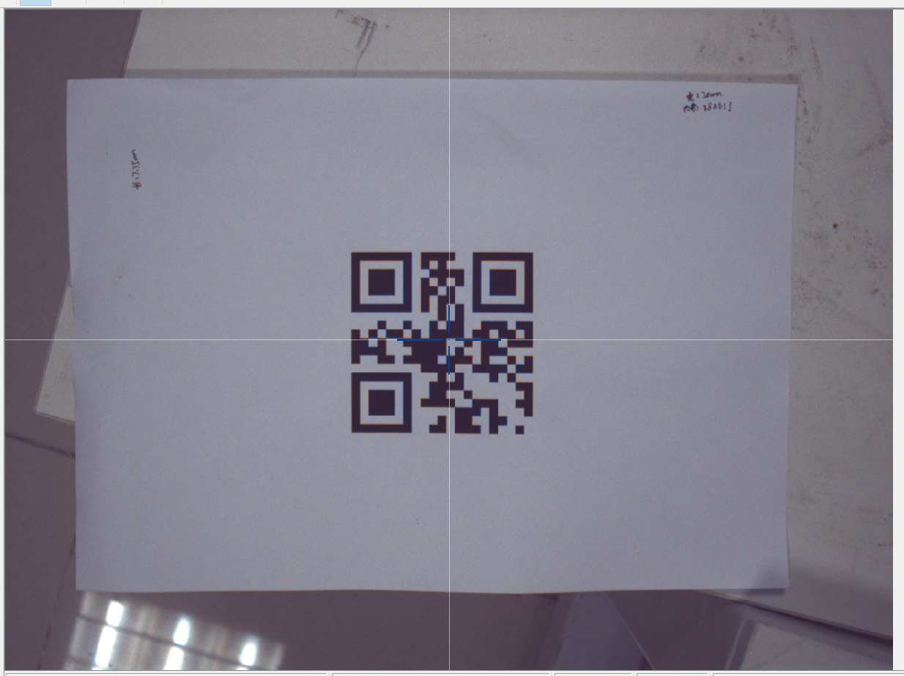

Home
因为有个项目是AGV+协作机器人+3D相机实现无人图书馆，这个项目因为AGV定位精度差(>30mm)，而3D相机厂家只是做物体识别，只能与机器人通信校准末端位置，无法控制AGV，所以有时AGV错位导致相机无法找到要抓取的书。
其实这个项目有若干可以改善的地方，但是由于我只是简单参与一下，无法决定什么，所以自己就用公司内现有的机器人+相机进行实验一下单相机2D识别可否实现抓取。
本文仅仅写一下在已经通过9点手眼标定后，再通过二维码方式在相机全视野中进行采集图像，然后提高标定的精度。
首先将机器人移动到原点(也就是固定拍摄点)，然后二维码图像放置在相机视野中心：

执行XY方向校准，采集图像保存在本地文件夹中：

XY方向校准过程视频：
UR机器人二维码QrCode手眼标定校准－XY方向标定
UR机器人二维码QrCode手眼标定校准－XY方向标定－UI界面
执行Z方向校准，采集图像保存在本地文件夹中：
Z方向视频见：
UR机器人二维码QrCode手眼标定校准－Z方向标定
UR机器人二维码QrCode手眼标定校准－Z方向标定－UI界面
=========================================================================================